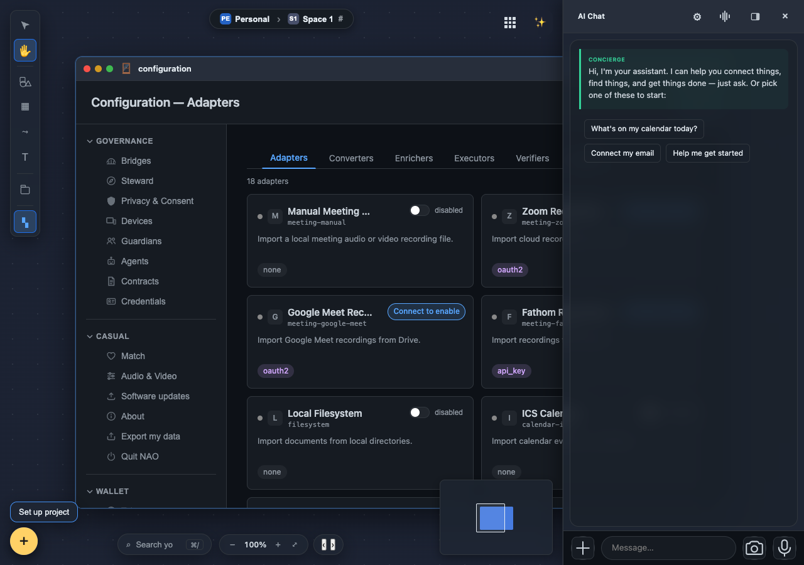

Four things changed this week
Nothing was published in these seven days, so this week is read from its own record rather than from companion articles.
Bridge accounts got somewhere safe to keep their credentials
Slack and Discord had nowhere to put a credential at all. All four services now seal theirs into the vault, and the plaintext session directories are wiped when the daemon stops. What a person sees when connecting is unchanged.
The assistant stopped answering from things it had not read
A guard now sits at the end of the answering path: if the assistant did not actually read the material, it does not get to summarise it. Answers also carry where each fact came from — your memory, or the model.
A closed group can be asked to let you in
A closed group used to look identical to one that did not exist. It now shows "Request to Join", stewards get a list of requests they can approve, and an invitation says who sent it.
Money arriving says who it came from
A received settlement showed up in the wallet with no payer attached. Both halves now name the other party — "received from", "sent to, paid" — and the live feed carries the amount and memo.
Bridge accounts finally have somewhere to keep a credential
The feature: where a bridged account's secret is kept once you have connected one. Not the act of connecting — that ceremony is rebuilt the following week — but custody of the credential it produces.
Before: Slack and Discord had no credential-sealing path whatsoever. WhatsApp and Signal produced linked-device credentials that lived in a plaintext directory on disk. Signal was not even registered as an adapter, so the code that starts a link ceremony had nothing to reach.
Now: all four produce a credential that is sealed into the vault, and the plaintext session directories are wiped when the daemon stops. Two of the four had nowhere to put one at all before this week.
This is the half of the problem that is invisible from outside. Nothing a person does changes — the visible sign-in is still a form, and stays one until the following week, when it becomes a scan.

A credential in a plaintext directory is not stored. It is left. The distinction matters because the code around it looks finished either way — there is a file, it is read back, the feature works. Nothing fails until somebody copies a laptop backup. This is the failure mode that does not announce itself in any test, because the test asserts the credential round trips, and it does.
Six silent catches got a voice. The WhatsApp and Signal link path had six places that swallowed an error and continued. A link failure therefore looked identical to a link that had not been attempted. Each now says what happened. A silent catch is worse than a crash: a crash tells you where to look.
History never loaded. Connecting a bridged account brought the account across but not its past. The synchronisation that pulls existing history on connect was written and was never armed, so every reconnection produced an account with an empty backlog. Nobody reported it as broken, because an empty conversation looks exactly like a new one.
One ceremony, then five. The onboarding assistant could only connect one of the six services, because only that one had been exposed as an operation it could call. The other five existed and worked — they were simply unreachable from the place people start. Building a capability and wiring it to the surface people actually touch are two pieces of work, and the second is easy to believe you have already done.
One call reported success having done nothing. Connecting WhatsApp by scanning a code returned "authentication flow started" without starting one. The caller had no way to tell that apart from a flow that started and was never completed, so the interface waited for something that was never coming. Four built-in connectors were also pointing at files that were not the real ones. A function that returns a success value is making a claim, and a claim nothing checks is a guess with good manners.
Messaging bridges — 212 changes this week, the largest area.
An assistant that will not answer from what it has not read
The feature: the assistant that answers questions about your own material — your memories, your files, the conversation in front of you.
Before: it could produce a confident summary of something it had never opened. Nothing in the answer distinguished a fact read from your memory from one the model supplied from its training, and nothing stopped it from answering anyway.
Now: three things changed, and they compose.
A refusal is wired into the finish of every answer. If the material was not read, the assistant does not summarise it. This runs at the point the answer is finalised rather than in the prompt, because an instruction is a request and a guard is a rule. Prompt text asks a model to behave; code decides whether the output ships.
Every answer carries its own provenance. A stated fact now records structurally whether it came from your material or from the model itself. That is the difference between an assistant you can audit and one you have to trust — and the reason to make it structural rather than a sentence in the answer is that a sentence is generated by the same process that might be wrong.
A tool permission binds where the tool runs. The scope a person consented to is now enforced at execution, not only where the plan is written. An out-of-scope call is refused at the point of use. Agreeing a scope during planning and enforcing it during execution are two different guarantees, and only the second survives a model that changes its mind mid-task.
The workflow itself is now driven by a model, with a human lock. A fixed sequence of phases was deleted and replaced by an assistant that advances the work and can close a design step on its own. The safeguard is not that a human approves every step; it is a plan-lock ceremony — present, approve, lock — so the shape of the work is agreed before it runs, and cannot be quietly rewritten afterwards.
What made this week's version honest was the test harness. A real-model test was being killed by the production memory guard and read as a failure of the feature. Fixing the harness came first: you cannot tell a wrong answer from a killed process if the killed process reports as a wrong answer.
Assistant and planning surfaces — 216 changes this week.
What this means, in plain terms
Five lessons this week paid for. Where others have written about the same ground, this says which part is theirs.
flowchart TB ask["A question about
your own material"] --> read{"Was it
actually read?"} read -- no --> refuse["Refused, not summarised"] read -- yes --> ans["Answered — each fact records
where it came from"] tool["A tool the plan agreed to"] --> ex{"Still in scope
at execution?"} ex -- no --> stop["Refused at the point of use"] ex -- yes --> run["Runs"] classDef ok stroke-width:2px; class refuse,ans,stop,run ok;
An instruction is a request; a guard is a rule
The assistant was told, in its prompt, not to answer from material it had not read. It sometimes did anyway. The fix was not a firmer instruction but a check at the point the answer is finalised. Prompt text asks a model to behave. Code decides whether the output ships. Anything you actually require belongs in the second place.
An answer you cannot trace is an answer you cannot check
Facts now record structurally whether they came from your material or from the model. Asking the model to say where a fact came from does not work, because the same process that invented the fact writes the citation. Provenance has to be recorded by the machinery, not narrated by the thing being audited.
A consented scope must bind where the work happens
A tool permission agreed during planning is not the same guarantee as one enforced at execution. This week it became both. A model can revise its plan between agreeing a scope and using it, so the only binding check is the one at the point of use.
Fix the harness before you believe the result
A real-model test was being killed by the production memory guard, and the kill was scored as the feature failing. Days of a wrong conclusion sit behind that. A failure mode that reports as an ordinary failure is worse than a crash, because nothing in the result tells you to doubt the instrument.
A credential left in a directory is not stored
Four bridge integrations produced credentials and left them on disk, two with no sealing path at all. Every test passed, because the credential round tripped. A test that proves data comes back proves nothing about where it rested. Storage has a location, and the location is part of the behaviour.
How much healthier is it than a week ago?
Counted the same way as week 19, so the two are directly comparable: files differing between the last commit before each window boundary, under the source, client, script and Rust trees.
Four honest notes.
- No article was published in these seven days. The previous dispatch is dated 2026-07-25 and the next published piece 2026-08-02. This report is therefore read entirely from the week's own commits.
- A busy week without a launch is still a busy week. 2,328 commits against the previous window's 2,409 — within 4% — across 30 areas.
- No before-figure exists for commits or files, because those count activity inside a window rather than a level. The comparison that means something is the previous window, given above.
- Test-file growth is not test quality. It counts how much test material exists, not how much of it is any good, and files were also split this week, which inflates the count without adding coverage.
a heavy engineering week with nothing to announce, whose two most useful outcomes were putting bridge credentials somewhere safe and closing a silent class of bug that had made one whole platform unable to repair itself.
What changed, area by area
Every area that moved, with its own count, in descending order. Each number is all of that area's file activity for the week.
The four threads, in numbers
Slack, Discord, WhatsApp and Signal all gained an in-app credential ceremony and vault sealing, covered above.
Signal was registered as an adapter so a link ceremony can reach it, six silent failure paths on the link were given a voice, and two oversized files were split.
Answers now carry structural provenance into the chat pipeline, so a stated fact records whether it came from memory or from the model.
A guard against fabricating from unread material was wired live, and a design gate the assistant used to need a human to close it can now complete itself.
and iOS — 103 changes.
Both gained the in-app token ceremony for Slack and Discord. The graph ask box got a Filter/Highlight toggle, its pinned sentence now states what the canvas actually shows, and a settled layout stopped being re-solved.
The river band now mounts only what is on screen, face regions became invisible clickable whole-face areas rather than boxes, and photos shared with you surface their people too.
The recorded walkthrough now waits for the library to stop loading before it records.
The next tier — 98 down to 51 changes
The desktop window stopped being classified as a phone, window geometry is clamped to each app's minimum size, and the search hint and title-bar radii were corrected.
Cleanup tooling was taught never to remove something still registered as in use, and guarded against following a symbolic link out of its own directory while deleting.
A diagnostic that existed to explain a failure was itself crashing, erasing the reason it was there to give.
A repository check now refuses client-side poll loops.
Publishing an already-built iOS artifact became a single command, and every legacy graph-node identifier minted at a write site is now surfaced rather than silently accepted.
Link previews render in the chat interface and their images are cached locally.
Delivery receipts persist onto the message so the second and third tick can render, and creating a space opens the real channel-creation dialog.
Multiple studio windows can now run at once inside the canvas, the build path emits real change frames, and the preview scales from its actual rectangle instead of an un-reflowed height.
Media transport wiring was re-homed onto the shared line, and a production seam for the transport bridge was exported.
Shared photos and files now reach the assistant — one gate had been dropping every attachment silently.
The placement menu was reworked to a single button.
Closed groups expose their access type so a non-member sees "Request to Join"; stewards can list and approve requests; invitations show who sent them and carry identity colours; an empty root identifier is refused as a merge key rather than treated as one.
One membership vocabulary now serves every reader of channel admission, membership cardinality is declared in one table with one refusal, and a limit that was firing on ordinary load now measures the thing its name promises.
Smaller areas — 36 down to 11 changes
The older fixed-phase state machine was retired in favour of the assistant-driven path, and a dead interception surface was deleted.
A received settlement now names the payer, both sides of a receipt read in plain words, and the live feed carries amount and memo.
A colour fallback series was retired across roughly 45 sites, and an install surface now registers correctly.
Per-source decode counters and per-tile video measurement instruments landed, making call quality measurable rather than reported.
Signal was registered so a link ceremony can reach it, an unreachable authentication path was deleted rather than left in place, and four built-in connectors were repointed at the real files they claimed to load.
Merged-person disambiguation now renders in the browser as well, reusing the existing test harness rather than forking it.
Work in flight when the system restarts is re-queued rather than permanently rejected, and a two-machine cross-build path was proven end to end before being switched on.
The same fault that stopped phones repairing themselves lived here too.
Member colouring and the real cryptographic extensions were wired through.
and flow funding — 19 changes.
A cross-peer replication ceiling was raised, then reverted when it did not hold up; a funding flow now targets a real token so value actually moves.
Real group-messaging cryptography now runs under the mobile engine, a simulated selective-disclosure scheme was replaced with the real one, and the fault that stopped a phone repairing its own copy of your data was closed everywhere it could occur, not only where it was found.
Publishing a model pack now routes through the content-addressed path, and configuration-only components were separated from ones that carry an interface.
Vouching for someone became mutual and symmetric rather than one-directional, and a group can now converge on who its members are without any personal information crossing — each member commits to their contact per group instead of publishing it.
Test coverage on the changed set rose from 75.4% to 82.5% with real tests rather than exemptions.
, mobile engine — 15 changes , tools — 11 changes.
Type-level suppressions were removed rather than silenced, and the mobile inference entry points were given real types instead of casts.